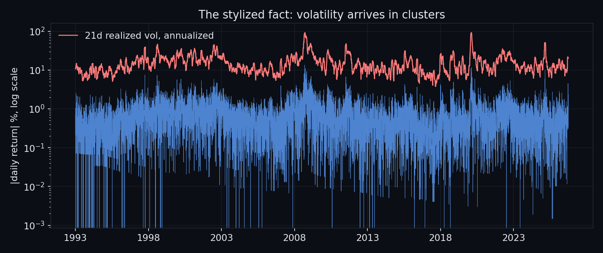
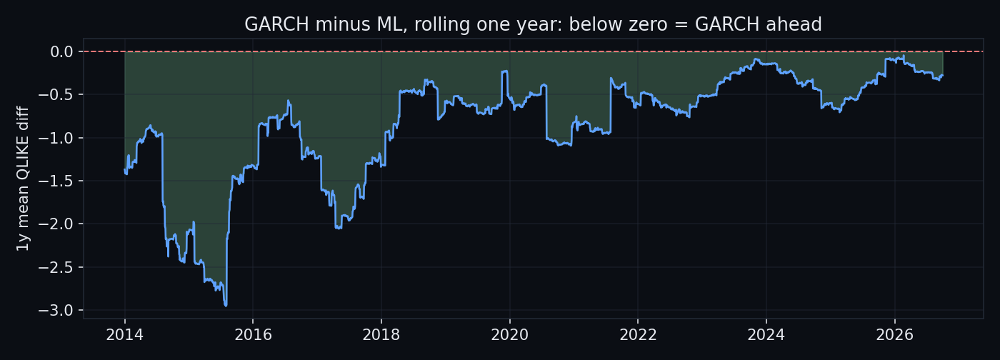
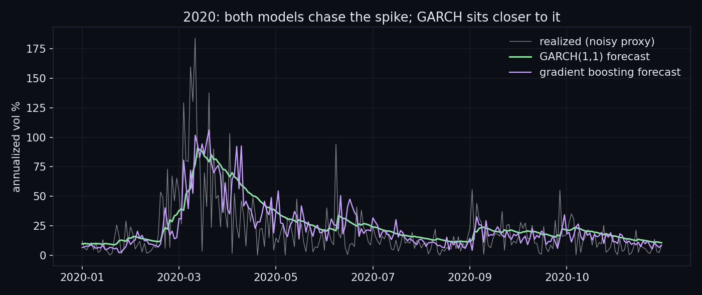
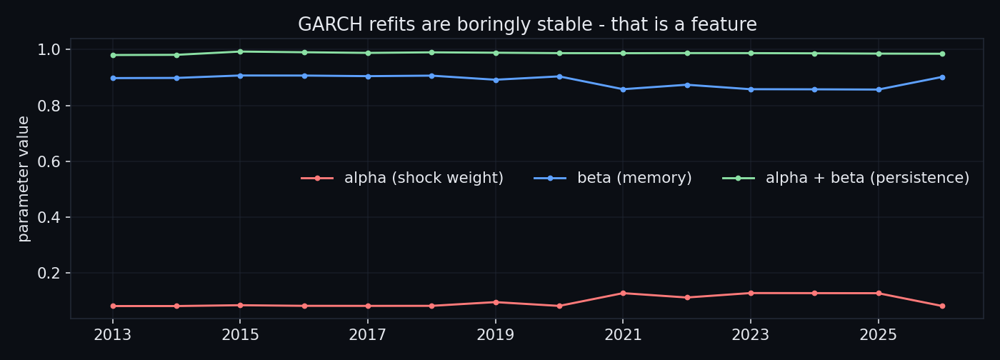

A 1986 model with three parameters beats the machine.
The task: forecast tomorrow's S&P 500 volatility. In one corner,
GARCH(1,1) - three parameters, fitted by maximum likelihood with a variance recursion
written here from scratch. In the other, gradient-boosted trees with twelve engineered
features. Both walk forward through 14 years of market they have never seen, refitting
once a year on the past only. Scored on QLIKE, the loss function the volatility
literature trusts. The old model wins, and it is not close.
01
Why volatility is forecastable at all
Returns themselves are nearly unpredictable. Their magnitude is not:
big moves follow big moves. Thirty-three years of SPY, pinned in this repo, show calm
decades punctuated by storms (2000, 2008, 2020, 2025). Any model that tracks the current
cluster level already captures most of what is predictable. The question is whether ML
finds something beyond that.

02
The scoreboard, 14 years out-of-sample
Every number below is out-of-sample: ,
forecast days, both models refit yearly on expanding windows of
past data only. Lower QLIKE is better; it is the loss that stays honest even though the
"true" volatility is never observed, only proxied.
Model
QLIKE
MSE
corr with realized (log)
Verdict
Is the gap real? The Diebold-Mariano test on the daily loss
differential says yes: DM statistic , p < 0.001. GARCH's advantage
over gradient boosting is statistically significant over the full window. The rolling
one-year difference below almost never crosses zero - and when it approaches it, that is
usually a quiet regime where any smooth forecast does fine.

03
Where the difference shows: 2020
COVID took SPY volatility from 10% to 180% annualized in weeks. GARCH's
recursion responds to a shock with exactly the persistence its parameters imply and
glides back down smoothly. The boosted trees chase every wiggle of the noisy realized
proxy, overshooting on the way up and twitching on the way down. The trees are fitting
the proxy's noise; GARCH's tiny parameterization can't - and that constraint is
precisely its edge.

04
Why GARCH is hard to beat
Three reasons, all visible in this study.
1. The signal is genuinely simple. Tomorrow's variance is overwhelmingly "today's
variance, plus a kick if today was wild." GARCH's two shape parameters encode exactly
that. Twelve ML features mostly re-derive the same number, and the trees' extra freedom
buys noise, not signal.
2. The target is a proxy, and proxies punish flexible models. We never observe
true volatility - only a noisy estimate of it. A flexible model fits the noise; a
constrained one averages through it. Note the MSE column: ML edges out GARCH there while
losing badly on QLIKE, which is designed to be robust to proxy noise. Which loss you
trust decides the "winner" - QLIKE is the one the literature settled on.
3. Three parameters cannot overfit 8,500 days. Refit GARCH every year for 14 years
and the parameters barely move (below). The ML model refits a fresh forest each year;
its advantage in flexibility never gets enough stable signal to pay for its variance.

The honest caveats. This is one asset (SPY), one frequency
(daily), one ML family (boosted trees, fixed hyperparameters, no tuning on the test
window), one horizon (one day). ML earns its keep at higher frequencies, with
cross-asset features, or on intraday realized measures - none of which the free data
here can test fairly. Also shown in the scoreboard: a humble 21-day rolling variance
lands close to GARCH. The real finding is not "GARCH magic" but that at daily frequency,
volatility is a low-dimensional problem - and low-dimensional problems reward
low-dimensional models.